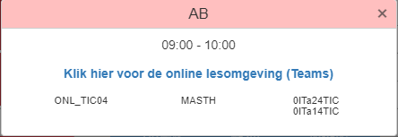

Door corona worden de lessen online gegeven, maar hoe verbind je met de teams les? Ga naar Noorderportal en ga naar je rooster. Klik op een rode vak, rood geeft aan dat het een online les is. Klik op de link.

Wanneer je de link opent vraagt teams als je door wilt gaan in de browser of in de app. Als je hebt gekozen wat je wilt gebruiken kom je in de lobby terecht, hier vul je je volle naam in en klik je op 'Nu deelnemen'. Dan kom je terecht in de teams call.